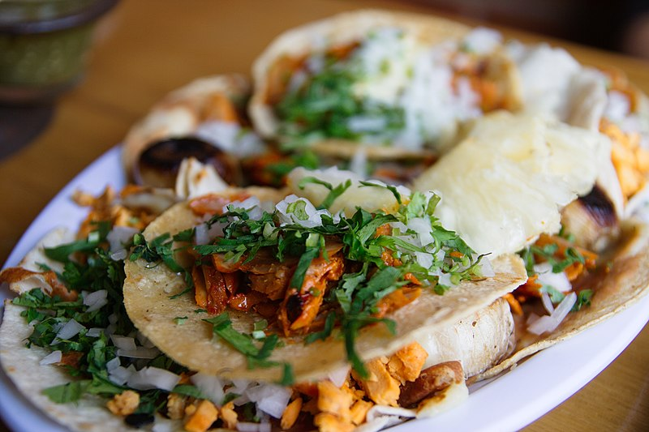

Texas Chili

Description
This Texas chili is rich and hearty with just the right amount of heat. The beef is wonderfully tender and perfectly absorbs the smoky, savory seasoning of the pepper paste and spices.
Ingredients
- 2 ounces dried chile peppers
- 4 cups hot water
- 1 tablespoon finely chopped chipotle pepper in adobo sauce (about 2 peppers)
- 1 tablespoon canola oil
- 4 lbs boneless beef chuck roast, trimmed of excess fat, cut into 3/4-inch cubes
- 2 teaspoons kosher salt
- 1 teaspoon freshly ground black pepper
- 1 small chopped yellow onion
- 3 cloves garlic, minced
- 1 teaspoon ground cumin
- 1/8 teaspoon ground cinnamon
- 1 1/2 cups water, divided
- 2 tablespoons masa harina
- 4 cups beef stock
- 2 bay leaves
- 1 tablespoon white vinegar
- 1 tablespoon dark brown sugar
- sour cream for serving, to taste
- 1 lime, cut into wedges for serving